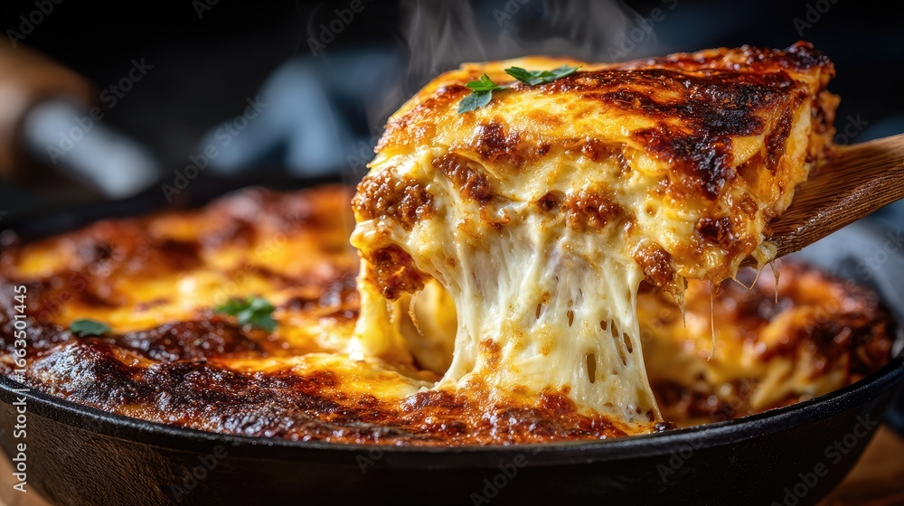

Home
Lasagna

Description
Lasagna, also known by the plural form lasagne, is a type of pasta made in wide, flat sheets. It originates in Italian cuisine, where it is served in a number of ways , including in broth (lasagne in brodo), but is best known for its use in a baked dish made by stacking layers of pasta, alternating with fillings such as ragù (ground meats and tomato sauce), béchamel sauce, vegetables, cheeses (which may include ricotta, mozzarella, and Parmesan), and seasonings and spices. Typically, cooked pasta is assembled with the other ingredients, topped with grated cheese, and then baked in an oven (al forno): regional variations of this dish are found across Italy.
Ingredients
- 1 lb. Italian sausage
- 1 yellow onion
- 1 28oz. can crushed tomatoes
- 3 oz. tomato paste (about 5 Tbsp)
- 1 Tbsp Italian seasoning
- 2 cups whole milk ricotta
- 1 cup shredded Italian cheese blend
- 1 large egg
- 1/4 tsp freshly cracked pepper
- 9 lasagna noodles (about ½ lb.)
- 2 cups shredded mozzarella
- 1 Tbsp chopped fresh parsley (optional garnish)
Steps
- Add the Italian sausage to a deep skillet and cook over medium heat until browned. While the sausage is cooking, dice the onion and then add it to the skillet with the sausage. Continue to stir and cook until the onion has softened (about 3 minutes).
- Add the crushed tomatoes, tomato paste, and Italian seasoning to the skillet and stir to combine. Partially cover the skillet with a lid, turn the heat down to medium-low, and let the sauce simmer while you prepare the other ingredients. Stir the sauce occasionally as it cooks.
- Preheat the oven to 350ºF. Add the ricotta cheese, Italian cheese blend, egg, and pepper to a bowl, then stir to combine. Set the cheese mixture aside.
- Fill a large pot with water and add ½ Tbsp salt. Bring the pot of water to a boil. Once boiling, add the noodles and cook just until tender (about 8 minutes). Drain the noodles in a colander.
- Spread about 1 cup of sauce over the bottom of a 9×13-inch casserole dish. Lay three noodles on top of the sauce. Spread ⅓ of the cheese mixture evenly over the noodles. Repeat the layers (sauce, noodles, cheese) two more times. Finish with the remaining sauce, then top with the shredded mozzarella.
- Cover the dish with foil and bake for 40 minutes. After 40 minutes, remove the foil, turn the oven from bake to broil, and broil for about 5 minutes or just until the cheese gets a little brown on top. Watch the it closely as it broils!
- Top with chopped parsley if desired, and slice into nine (or twelve) pieces. Serve and enjoy!